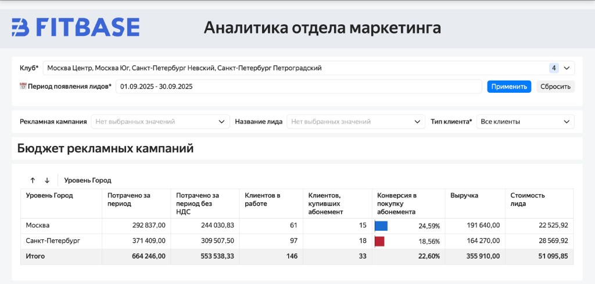
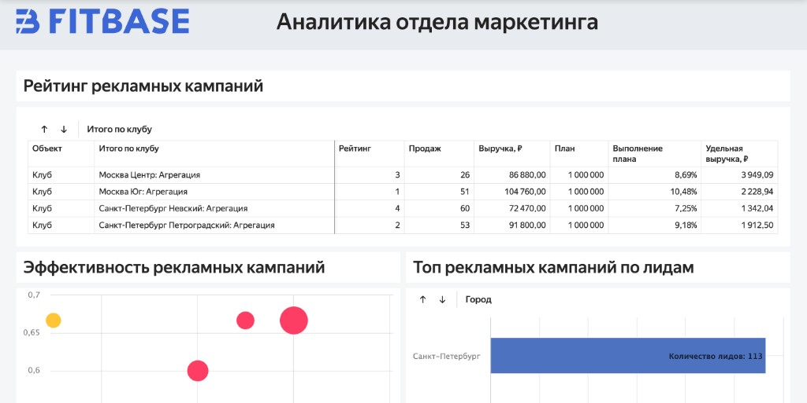
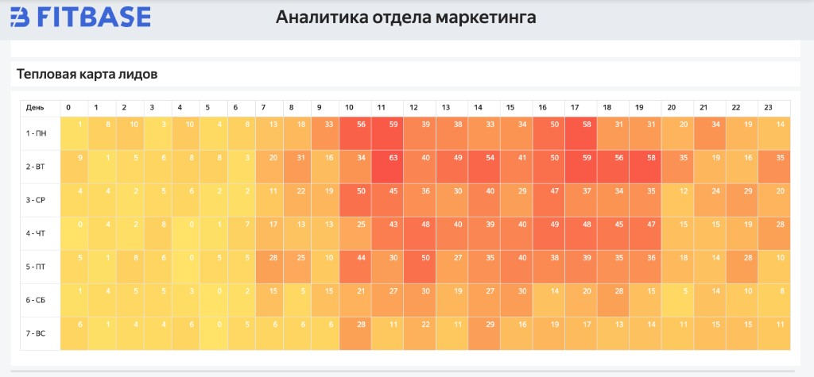
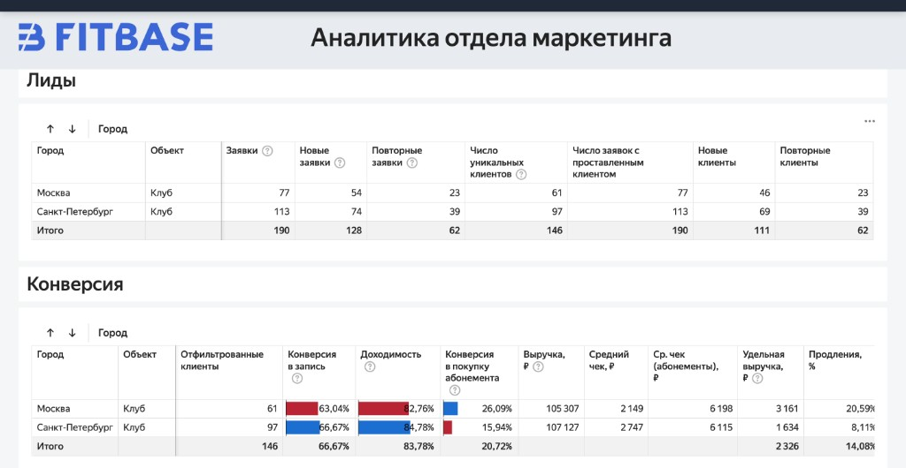

Коротко: Сквозная аналитика связывает рекламные расходы с реальными деньгами в кассе. В StretchHouse это не «отдельный отчёт», а рабочий инструмент для управляющей компании и партнёров: лиды не теряются, UTM-метки дотягиваются до выручки, а решения по бюджету принимаются по данным, а не по ощущениям.
Контекст: зачем студиям сквозная аналитика
StretchHouse — сеть студий стретчинга с партнёрской моделью. У каждой студии:
- несколько источников заявок (реклама, соцсети, карты, промоутеры, сайт на Tilda, чат-боты);
- админы и менеджеры, которые обрабатывают лиды с разной скоростью и внимательностью;
- одна и та же боль: лиды теряются, реклама «стреляет» вслепую, управленческих цифр нет.
В обычной картине мира маркетинг видит:
- показы, клики, стоимость заявки в рекламном кабинете;
- количество заявок по офферам (утренний абонемент, пробное, безлимит и т.д.).
Но не видит:
- какие заявки реально дошли до пробного, купили абонемент и продлились;
- какие кампании и креативы приводят «дешёвых» лидов, а какие — дорогих, но сильно более конверсионных;
- как быстро обрабатываются лиды и где они «застревают» во воронке.
Итог: деньги тратятся, лиды «висят» в CRM, а ответ на вопрос «какой канал реально приносит выручку» остаётся субъективным.
Продукт: пакет сквозной аналитики StretchHouse × FitBase
На стыке экспертизы управляющей компании StretchHouse и команды FitBase Lab появился отдельный пакет аналитики:
- единый дашборд на bi.fitbase.io для управляющей компании и партнёров;
- интеграции с рекламой (VK, Яндекс.Директ, Tilda, Taplink, карты, промоутеры);
- сквозная связка: рекламный кабинет → UTM → лид в CRM → запись на пробное → покупка → продление → реферальные продажи;
- бот-информатор в Telegram, который сообщает о новых лидах и событиях без входа в систему.
В рамках партнёрской сети это превратилось не просто в дашборд, а в полноценный рабочий инструмент: лиды не теряются, видно, откуда приходят деньги, и руководители опираются на данные, а не на ощущения.
Архитектура: от источников до дашборда
Сквозная аналитика для StretchHouse строится на общей архитектуре FitBase (см. ТЗ сквозной аналитики), адаптированной под сеть студий:

- Источники данных:
- рекламные кабинеты: VK Ads, Яндекс.Директ, Telegram Ads, другие источники трафика;
- Tilda, Taplink, сайты и лендинги с UTM-разметкой;
- CRM FitBase: заявки, статусы, записи, продажи, продления;
- промоутеры и офлайн-источники (через формы и ботов);
- чат-боты в Telegram: воронки, шаги, заявки.
- ETL-слой:
- Python-скрипты по расписанию;
- забирают расходы, показы, клики, UTM-метки из рекламных кабинетов;
- забирают лидов, статусы и выручку из CRM FitBase;
- приводят всё к единому формату (таблицы
leads,ad_costs,stage_history,accountsи др.).
- Хранилище и витрины:
- ClickHouse (приоритет) или PostgreSQL;
- агрегированные витрины под конкретные дашборды: Executive Overview, Funnel, Channels, Plan/Fact и др.
- Визуализация:
- Yandex DataLens с 10+ дашбордами;
- единый воркбук для управляющей компании и партнёров;
- Telegram-алерты по ключевым событиям (новый лид, аномалии, выполнение плана).
Важно: это не абстрактная схема, а боевой пакет, которым уже пользуются десятки студий в сети StretchHouse — именно поэтому презентация и вебинар опираются на живые кейсы и реальные цифры.
Основные проблемы, которые решает система
1. Потеря лидов и человеческий фактор
Без автоматизации лиды:
- «зависают» в чатах и формах без переноса в CRM;
- обрабатываются с задержкой (заявка в 10:00 → звонок в 14:00 → клиент уже выбрал другой зал);
- теряются при ручном переносе из файлов и парсеров.
В сквозной аналитике StretchHouse:
- все источники подключены напрямую: VK, Tilda, Taplink, карты, промоутеры, чат-боты;
- заявки автоматически попадают в CRM FitBase с нужными полями и UTM-метками;
- бот-информатор в Telegram уведомляет о новых лидах и ключевых событиях;
- в дашборде есть кейсы «Какие лиды пришли сегодня», «С какими лидами работали вчера», «Где потеряшки».
Результат — админы и менеджеры тратят меньше времени на ручной ввод и больше на реальные продажи.
2. Отсутствие связи между рекламой и деньгами
Типичная ситуация:
- в рекламном кабинете видно стоимость заявки и количество лидов;
- в CRM видно продажи и выручку, но без понимания, откуда пришёл клиент;
- решения по бюджету принимаются по CPL, а не по стоимости клиента и выручке.
За счёт единых UTM-конвенций и ETL-слоя:
- каждый лид в CRM связан с источником, кампанией, креативом и поисковым запросом;
- в дашборде видно:
- сколько лидов и MQL дала каждая кампания;
- сколько оплат и выручки она принесла;
- сколько стоит реальный клиент, а не просто заявка.
Маркетинг перестаёт «подкручивать» только дешёвые заявки и начинает управлять стоимостью клиента и ROAS.
3. Масштабирование по филиалам
Один филиал можно держать «в голове» — проверить лиды вручную, пройтись по воронке. При 2–3 студиях и выше:
- объём заявок растёт;
- админы и менеджеры работают по-разному;
- ошибки и потери начинают расти не линейно, а в геометрической прогрессии.
Сквозная аналитика даёт:
- единый взгляд на сеть — по филиалам, по городам, по управляющей компании;
- сравнение воронок и конверсий между студиями;
- понимание, где процессы работают, а где нужна донастройка скриптов и автоматизаций.
Ключевые сценарии работы в дашборде
Кейс: какие лиды пришли сегодня
Задача: понять, что случилось «здесь и сейчас».

Примеры отчётов отдела маркетинга
Помимо дашбордов по воронке и выручке, в пакет входят готовые отчёты для ежедневной и еженедельной работы маркетинга.


В дашборде:
- фильтр по дате появления заявки — сегодня;
- таблица с:
- количеством лидов;
- источником (канал, кампания, креатив);
- статусом (новый, в работе, пробное, покупка).
Важная деталь: из дашборда можно одним кликом провалиться в конкретный лид в CRM и увидеть, что с ним происходит прямо сейчас.
Кейс: с какими лидами работали вчера
Задача: проверить работу админов и менеджеров за прошлый день.
В дашборде:
- выбирается широкий период появления заявки (например, с начала месяца);
- накладывается фильтр по дате последнего действия = вчера;
- видно:
- по каким лидам были изменения статуса;
- какие лиды переведены дальше по воронке;
- где работа стоит.
Это превращает утренний разбор в быструю и предметную встречу, а не в обсуждение «ощущений».
Кейс: как найти «потеряшек»
Задача: вытянуть лиды, по которым давно не было активности.
В дашборде:
- выбирается период появления заявки (например, с начала года);
- добавляется фильтр «нет работы последние N дней» и инвертируется;
- система возвращает список лидов, по которым не было действий 5–7 дней и дольше;
- можно отфильтровать:
- по источнику (чтобы не терять лиды из дорогих каналов);
- по статусу (новые, пробные, в работе).
Дополнительно эта логика закрепляется автоматизацией в CRM:
- если лид находится на стадии дольше X дней без движения, он попадает в отдельный этап
Alarm; - по этим лидам настраиваются отдельные проверки и регламенты.
Кейс: что на самом деле дают UTM‑метки
Авторы вебинара несколько раз подчёркивают: «UTM — это сокровище, которое даёт огромное количество материала».
В сквозной аналитике:
- UTM-поле тянет:
- кампанию и креатив;
- канал и тип таргетинга;
- ключевое слово или площадку;
- на основе этого можно:
- видеть, какие офферы и креативы приводят платёжеспособных клиентов, а не просто заявки;
- быстро выключать кампании с высокой ценой клиента и низкой выручкой;
- масштабировать работающие связки.
Практический пример из презентации:
- в рекламном кабинете источник помечен как «Tilda»;
- по UTM видно, что это трафик из Яндекс.Директ по похожей аудитории;
- менеджеры понимают, что это тёплый лид, и выстраивают другой скрипт.
Эффект для маркетинга и управляющей компании
По словам команды StretchHouse:
- дашборд стал рабочим инструментом, в котором «живут» управляющие и маркетологи;
- решения по бюджету принимаются по воронке до денег, а не только по CPL;
- видно, какие офферы и креативы:
- дают больше лидов;
- дольше живут в воронке;
- приносят больше выручки и продлений.
За счёт этого:
- маркетологи точнее понимают, куда добавлять бюджет, чтобы привезти не просто лидов, а деньги;
- управляющая компания видит, какие партнёры работают по процессу, а кто «теряет» лиды и деньги;
- становится возможным запускать новые модули (зарплата тренеров, реактивация, воронки по типу клиентов) с опорой на данные, а не на интуицию.
Подробная техническая спецификация и архитектура решения для FitBase описана в документе «ТЗ: Сквозная аналитика маркетинга FitBase» — эта статья опирается на него, но фокусируется на управленческих смыслах и кейсе StretchHouse.